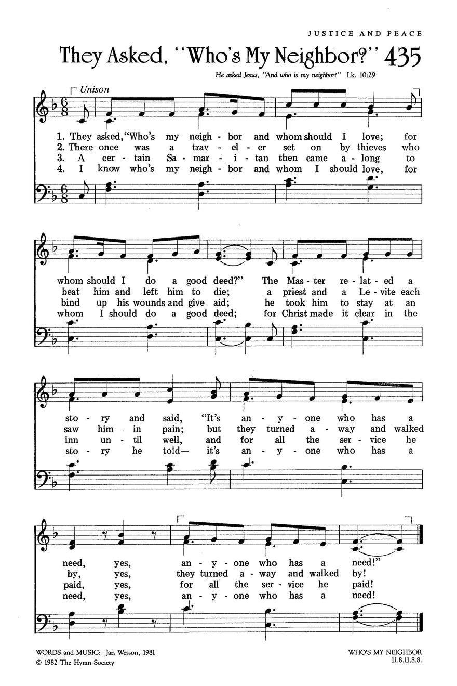

|
|
【誰是我的鄰舍】 |
|
1 They asked, "Who's my neighbor and whom should I love;
2 There once was a traveler set on by thieves
3 A certain Samaritan then came along
4 I know who's my neighbor and whom I should love,
|
群眾問道：「甚麼人可得關愛？ |
|
https://www.hopepublishing.com/find-hymns-hw/hw3894.aspx
 |
|
|
|
|

https://youtu.be/HNEbtDt6yqM
| Text: | They Asked, "Who's My Neighbor?" |
| Author: | Jan Wesson |
| Tune: | WHO'S MY NEIGHBOR |
| Composer: | Jan Wesson |
Tune Information
| Title: | WHO'S MY NEIGHBOR |
| Composer: | Jan Wesson (1981) |
| Meter: | 11.8.11.8.8 |
| Incipit: | 51113 21555 4 |
| Key: | F Major |
| Copyright: | © 1982 The Hymn Society |
Verse 1
「究竟誰人是我鄰居應關愛？
應當怎去照顧關心？」
救主透過一經典慢慢地講：
「是任何人需要被愛。
對！任何人需要被愛！」
Verse 2
曾有客旅被賊人攻擊搶劫，
將他打到重傷等死。
利未人祭司看見客旅受苦，
轉身去只當路過。
唉！轉身去只當路過！
Verse 3
有一撒瑪利亞人好心經過，
包紮傷勢，援助施予。
送他去到旅店至傷口治好，
他找清了所有用費。
嘩！找清了所有用費！
Verse 4
我知誰人是我鄰居應關愛，
應怎麼去照顧關心。
我主基督講清楚不須解釋：
是任何人需要被愛。
對！任何人需要被愛！